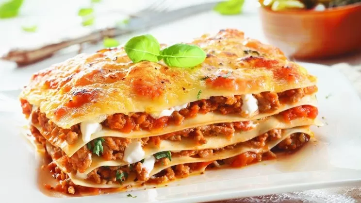

LA LASAGNA

Ingredienti
- 500g di carne macinata di manzo
- 1 cipolla tritata
- 2 spicchi d'aglio tritati
- 800g di pomodori pelati o passata di pomodoro
- 250g di pasta per lasagne
- 500ml di besciamella
- 200g di mozzarella a cubetti
- 100g di parmigiano grattugiato
- Olio d'oliva q.b.
- Sale e pepe q.b.
- Basilico fresco o prezzemolo (opzionale)
Procedura
- In una padella, scalda un filo d'olio d'oliva e fai soffriggere la cipolla tritata e l'aglio fino a doratura.
- Aggiungi la carne macinata e cuoci a fuoco medio fino a quando non è ben rosolata.
- Unisci i pomodori pelati o la passata di pomodoro alla carne, mescola e lascia cuocere il ragù a fuoco lento per circa 30-40 minuti. Aggiusta di sale e pepe. Aggiungi del basilico fresco o del prezzemolo se desiderato.
- Nel frattempo, prepara la besciamella se non è già pronta. (Puoi farla sciogliendo del burro, aggiungendo farina e poi latte, mescolando continuamente fino a ottenere una consistenza cremosa e liscia.)
- Preriscalda il forno a 180°C.
- In una teglia, stendi un sottile strato di ragù sul fondo, quindi disponi uno strato di pasta per lasagne.
- Copri la pasta con un altro strato di ragù, un po' di besciamella e una manciata di mozzarella a cubetti. Cospargi con parmigiano grattugiato.
- Ripeti gli strati (pasta, ragù, besciamella, mozzarella e parmigiano) fino a esaurire gli ingredienti, terminando con uno strato abbondante di besciamella e parmigiano sulla superficie.
- Copri la teglia con un foglio di alluminio e cuoci in forno preriscaldato per circa 25 minuti.
- Rimuovi l'alluminio e cuoci per altri 10-15 minuti, o fino a quando la superficie è dorata e croccante.
- Lascia riposare la lasagna per qualche minuto prima di servirla.